V0.17 评委导览｜两轮工业革命，一次角色转变
不自报分数；让七维主张、证据位置与未满足条件在首屏可见。
20任务书相关性10原创性15AI规划创新20可实施性10公共利益10风险合规15表达完整
诚实状态｜12 项验收 = 8 项方案层可判断 + 4 项现场依赖；6 级条件释放，外部放行 0；核实成本输入 0；授权现场动作 0。
京张总体空间：三区两翼、三处重点区域、五个旗舰
先定位京张如何组织，再进入 FP01。图中 SITE / KEY 为临时关系几何；官方边界到达后必须整包重算。
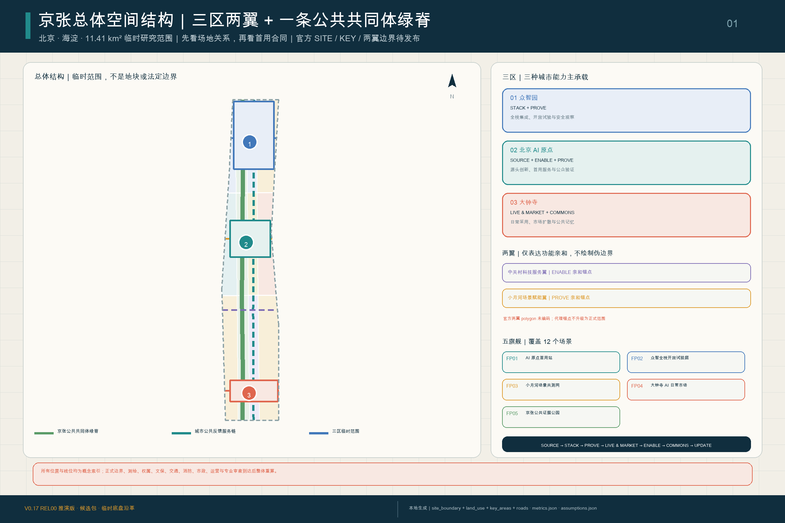
双层验证：共创正在发生，城市仍待实证
一次正在发生且已有公开记录的共创过程，一项仍待外部实证的城市实践。两层证据互相启发，但不能互相替代。
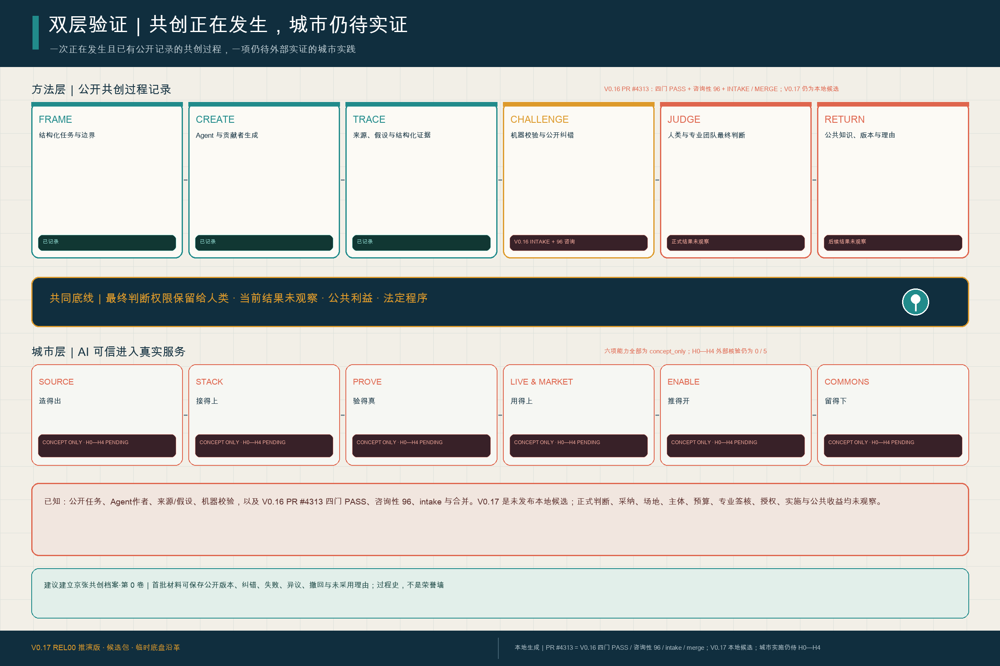
建议建立“京张共创档案·第 0 卷”，首批材料可保存公开任务、版本、来源、纠错、异议、失败、撤回与未采用理由；它是过程史，不是已经建成的荣誉墙。
合同背后的三个重点区域与人尺度支撑
以下均为概念体验，不代表现状、精确位置、建筑方案或获批工程。

众智园 · 接得上 / 验得真
公众旁观廊位于安全边界外；试验庭保留有人控制、物理急停与能耗显示。

AI 原点 · 造得出 / 用得上
无手机、无账号和轮椅使用者先抵达有人柜台；评测、停止与申诉职责分离。

大钟寺 · 用得上 / 推得开
小店与创作者留在前台，人工服务、争议复核和贡献档案形成日常公共界面。
六项系统能力下移为合同的空间与运营支撑
ORIGINATE—INTEGRATE—PROVE—DEPLOY—SCALE—RETAIN 不是首屏口号，而是支持一项候选任务完成、被接管、退出和留下证据的后台能力。
一个人、一件事、一份可撤销合同
FP01 只提出一个待 D0 现场确认的候选服务问题；它不是已获授权的服务、采购或试点。
P01 · 早期职业阶段使用者；轮椅与无智能手机仅为设计测试条件，不对应真实居民。
在有人窗口找到一项由人工确认的学习或职业服务，或获得有理由、可申诉的拒绝；保留无手机和非 AI 路径。D0 人工/非数字基线仍为 unknown。
S07 是唯一面向使用者的服务；S03 只做独立评测；S04 只提供接口/API 支持。
四类合成回执成功拒绝人工接管退出与恢复
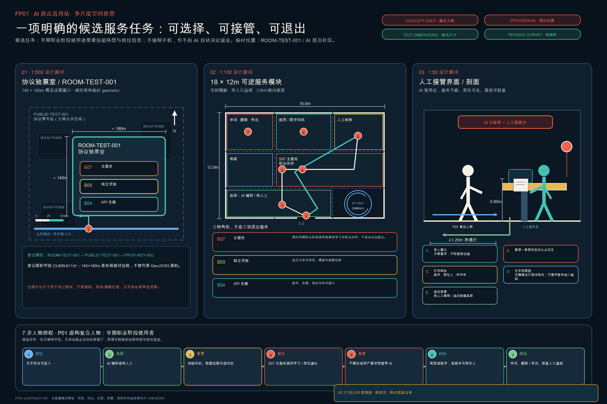
FP01 · 一项候选服务任务的可撤销首用合同
S07 是唯一用户服务，S03 只做独立评测，S04 只做接口支持；D0 基线 unknown。四类合成回执覆盖成功、拒绝、人工接管、退出恢复。D90 通过仍只解锁另行授权讨论。
GO · 只解锁独立授权讨论
REVISE / STOP · 冻结自动功能，恢复人工基线，失败证据进入 COMMONS
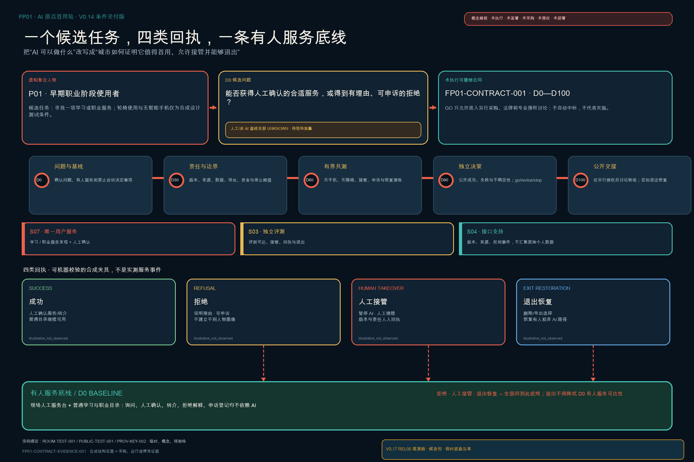
V0.17 预可实施性交接｜JSON 同源指标
全部指标由 fp01-delivery-control.json 动态读取；外部实际值保持 0 / null / HOLD
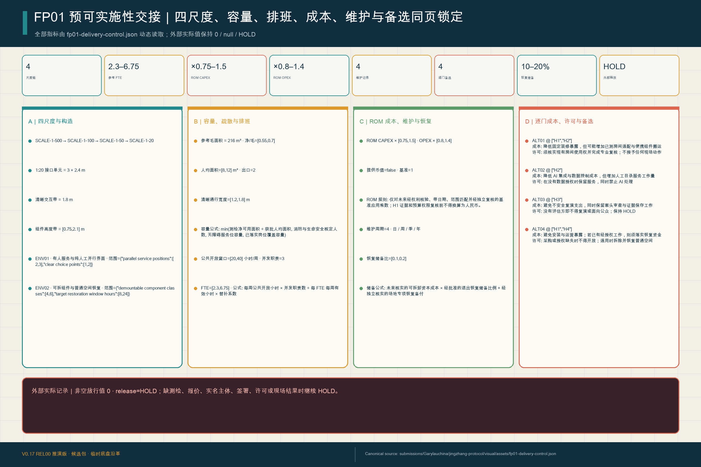
外部实际记录｜非空放行值 0 · release=HOLD；缺测绘、报价、实名主体、签署、许可或现场结果时继续 HOLD。
FP01 实施裁定与 REL00 回放
四项官方可实施性焦点一页可判；12 例合成接口回放真实运行，但不计作现场或外部实证。
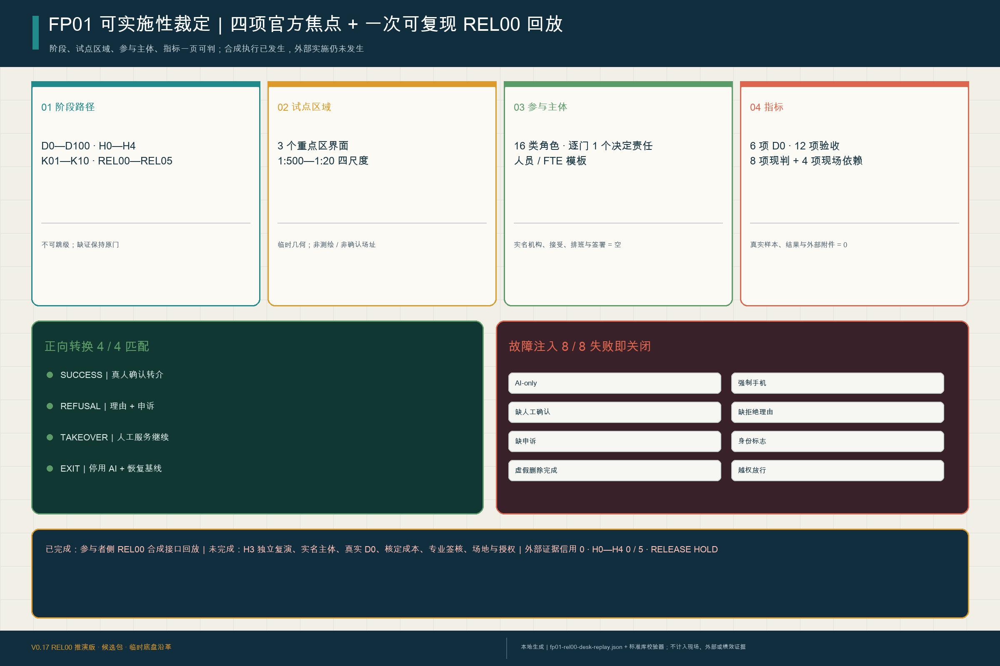
REL00 设计时执行证据 ≠ H3 独立复演。实名主体、真实 D0、核定成本、专业签核、场地与授权仍为空；H0—H4 为 0 / 5，外部放行 HOLD。
FP01 H0—H4 实证就绪：5/5 已定义，0/5 外部核验
五道门已经可填报、可停止、可机检；但场地、实名主体、预算、专业复核、受控演练与授权尚无外部证据。
0 / 5当前 0/5 道门通过，0 项外部证据获核验。这是登记状态，不是测试失败率。打开双语实证就绪附件
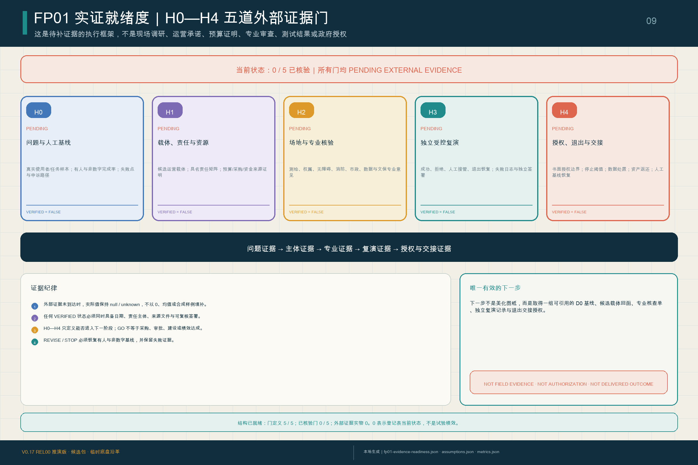
一个主品牌，一套可复用的城市界面
“京张，再次开路”是唯一主品牌；五旗舰、运营节律、贡献荣誉、三地标与六类可逆组件使用同一背书语法。AI City API / Trusted Compact 是横贯运行层，不另起品牌。
京张，再次开路1 主品牌 · 5 旗舰 · 4 节律 · 5 类贡献记录 · 3 地标 · 6 可逆组件标志与组件均为概念方向；非正式徽记、已选址设施或获批建设。
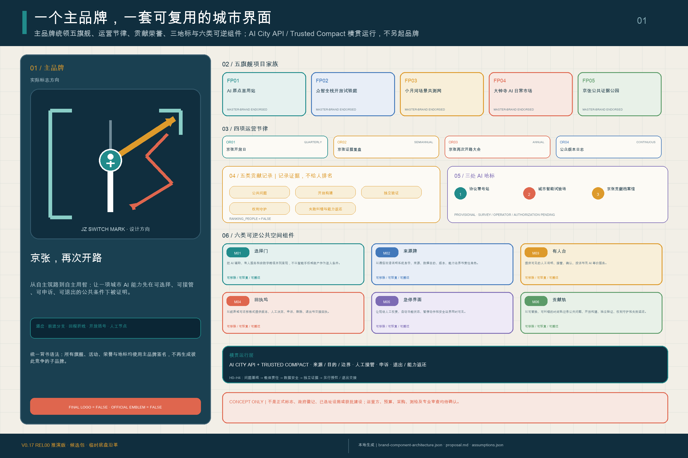
核心指标
已知值只描述提交结构与临时设计模型；实际采购、扩散、标准输出和独立核验公共收益保持 unknown。
任务覆盖与自检状态
来源 → 假设 → GeoJSON / 指标 → 双语图件 / 图纸 → 矩阵 → 四门自检。官方边界到达后触发整包重算。
总览地图三层范围重点区域用地分区交通慢行蓝绿公共空间建筑更新项目AI 场景核心指标任务覆盖自检状态来源假设
支撑分析图
以下四图补充重点区、用地、慢行蓝绿和指标证据；核心图不在页面末尾重复展示。
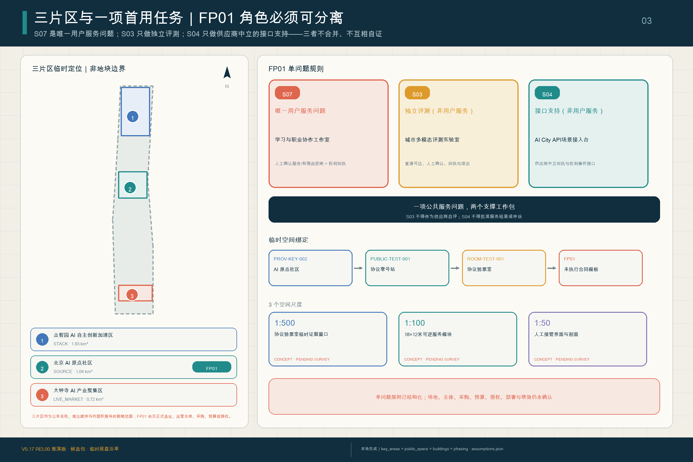
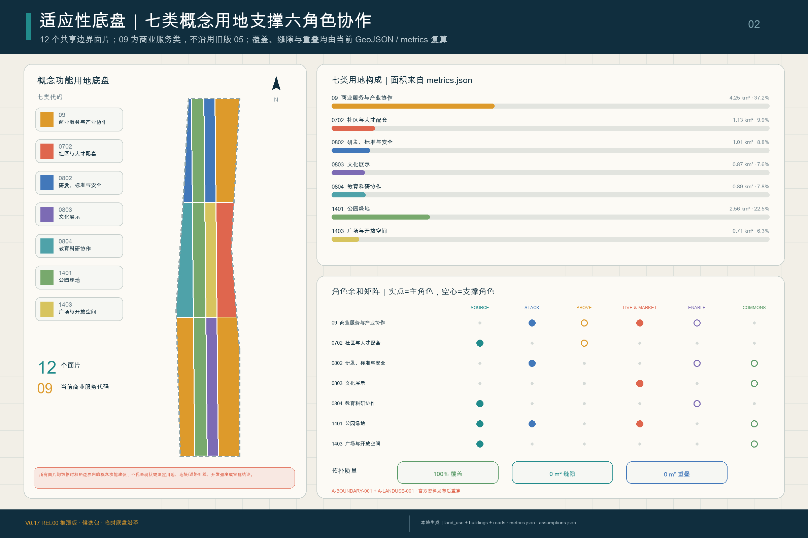
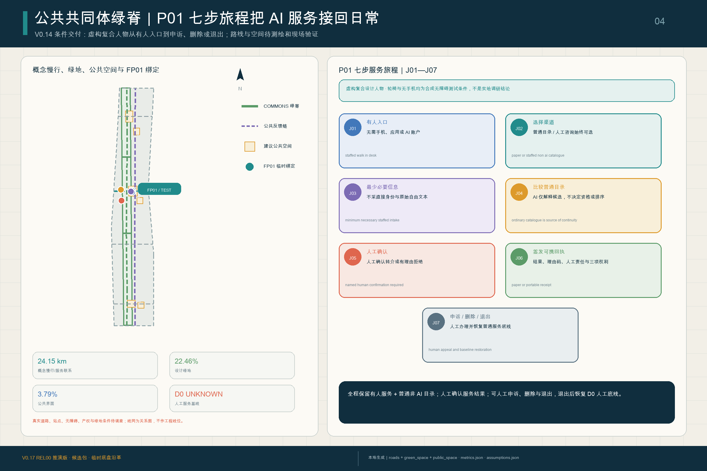
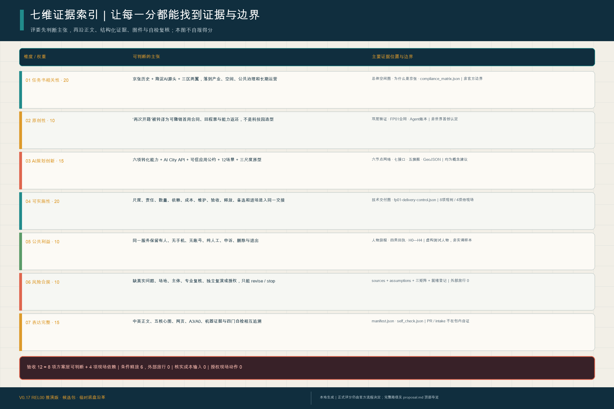